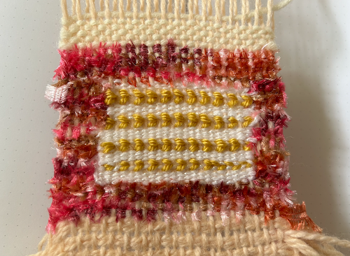
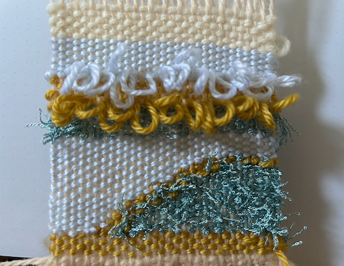
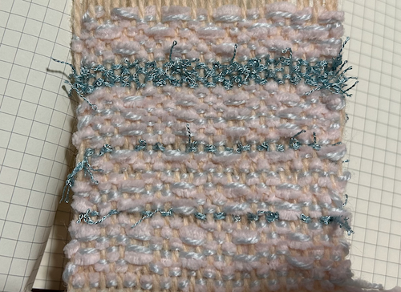

This assignment was completed on September 17, 2023
My goal for this weekly assignment was to experiment with different variations and additions to the beginner tabby weave. I had learned about interlocking and twining, and especially wanted to experiment specifically with these two techniques in mind. I had just gone to Art Parts in Boulder, CO before starting to weave, so I had several different new yarns that I was also very inspired by and was itching to start experimenting with.
swatch one: twining & interlocking
In my first swatch, I was inspired by a multi-colored pink fabric yarn that I hoped would create a fuzzy texture to it. I decided that I wanted to create an interlocking border around the swatch using the pink fabric yarn, and then inside it I wanted a white tabby background (to solidify my tabby weave) as well as experimenting with twining with mustard yarn. I really enjoy the way that twining turned out, I thought I did a pretty decent job and it looked like plaits. Next time I try twining, I want to make a larger effort to make sure that they are all of the same tension so that they are the same size when I beat my weft.
swatch two: interlocking & extruded weft
In my second swatch, I was inspired by blue and mustard yarns because I thought that the colors looked nice together. I wanted to incorporate stripes into the design of the swatch, so I started with a mustard stripe. Then I worked on triple color interlocking using a blue tasseled yarn, mustard yarn, and light blue yarn to create a diagonal stripe pattern. After I completed this component, I created another blue stripe with the tasseled yarn, and then I decided to experiment with pulling out the weft extra so that it created loops. Once I beat my weft, the loops were pretty secure, and I was a huge fan of how the loops turned out on the final swatch. One thing I would like to experiment with in the future is finding a way to knot these loops in place so that they are a bit more secure.
swatch three: double yarn & basket weave
In my third swatch, I was really inspired by a light pink and light blue yarn that I thought were similar tones and would look good together. I decided to see what it would look like if I decided to double up yarn and weave them through together. While doing this, I decided to try regular tabby weave as well as basket weave. I really enjoyed basketweave, I thought that it added a lot of visual interest. I added stripes to seperate certain sections with the blue tasseled yarn, and I like the addition of another yarn that was not paired with another kind. I want to experiment with different types of weaves that skip warp in the future.
final reflection
Overall, I loved this assignment. I faced several difficulties while working on the loom for the first time. My first mistake was picking a yarn that was too weak as my warp, and I snapped the warp and had to cut off my swatch and then retie the warp and then continue. I enjoyed weaving as usual and (as outlined above), I have a few goals in the future. When it comes to twining, I want to make a larger effort to make sure that they are all of the same tension so that they are the same size when I beat my weft. Additionally, for the loops, I would like to experiment with in the future is finding a way to knot these loops in place so that they are a bit more secure. Lastly, I want to experiment with different types of weaves that skip warp in the future. I am really excited to continue learning how to weave and getting to see how much I progress.